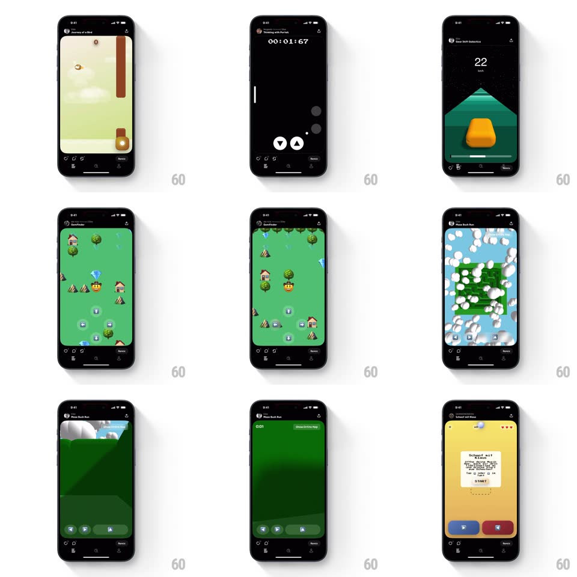

Media
Frame-by-frame

Rebuild this interaction 1:1: Spielwerk's game pager - a vertical swipe flips between full-screen mini-games with a snappy spring, the header title swapping as each game lands.

Rebuild this interaction 1:1: Spielwerk's game pager - a vertical swipe flips between full-screen mini-games with a snappy spring, the header title swapping as each game lands. ## Integration Integration: stack-agnostic spec - springs given as stiffness/damping, timed motions as duration + curve; map every value to your framework and animation library of choice. ## Scene Full-screen mini-games stacked vertically (a flappy-bird clone, a portals puzzler, a timing game, a gem-collector map, a maze runner): a top bar with the game's title and a bottom bar with controls frame each one. ## Motion spec Pattern: vertical swipe pager with spring settle. - Drag: the current game translates up 1:1 revealing the next game below; both screens stay live (no placeholders). - Release: past 35% or with fling velocity, the transition completes (spring ~300/22, 300ms) with a 2% overshoot; otherwise it springs back (spring ~360/24). - Title: the header's game name crossfades with a small vertical slide (150ms) as the new game passes 60% committed. - Incoming scale: the arriving game scales from 0.96 to 1 during the settle (200ms) for depth. - Chrome (top and bottom bars) stays fixed - only the game viewport pages. ## Calibration - Both games render during the drag - no blank gaps at any speed. - The overshoot reads as a bounce, not a wobble: one clean settle. ## Reduced motion Crossfade between games (250ms). ## Don't miss - The swipe is vertical - horizontal drags do nothing. - The title swap keys off commit progress, not finger-up.